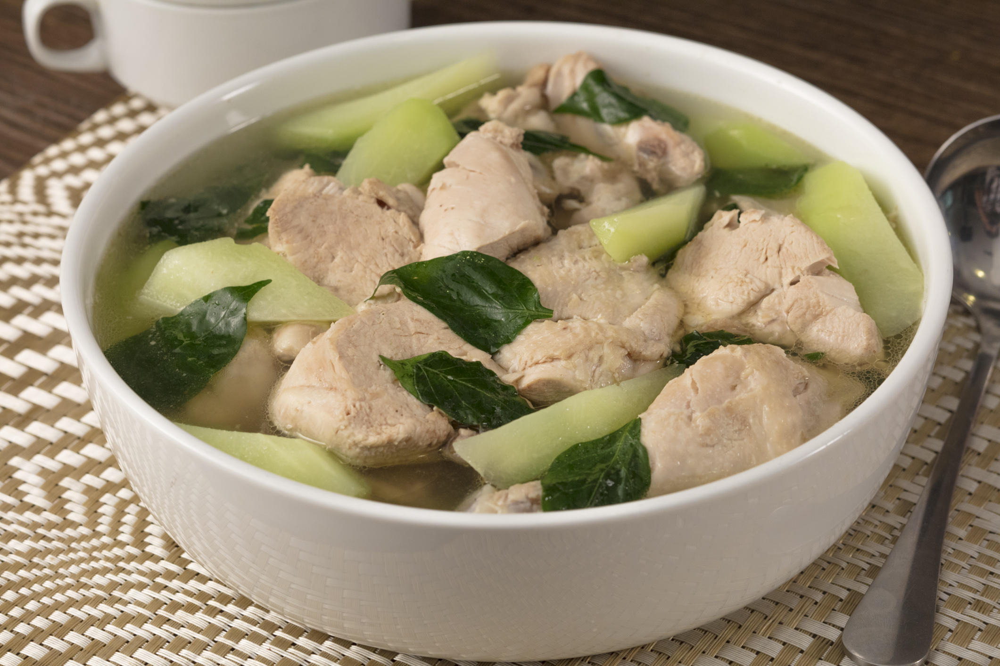

Home
Chicken Tinola

Description
Chicken Tinola is a Filipino soup dish. It involves cooking chicken pieces in ginger broth.
It is a popular cold weather dish. I always feel warm and cozy every time I eat it.
This Filipino Chicken Soup is best enjoyed with fish sauce as dipping sauce, and a cup of warm white rice.
Ingredients
-
3 lbs. chicken, cut into serving pieces – Tender chicken pieces that form the hearty base of your tinola stew.
-
2 green papaya, wedged – Green papaya chunks add a subtly sweet flavor and a satisfying texture.
-
1 ½ cup malunggay leaves – Provide a fresh, leafy green addition to the dish.
-
1 cup hot pepper leaves – Add a mild heat and a unique flavor that make it tinola-told-you-so!
-
5 cloves garlic, crushed and chopped – Adds aromatic depth and savory flavor to the tinola.
-
1 onions, chopped – Brings sweetness and richness to the base of the stew.
-
3 thumbs ginger, julienned – Imparts a zesty and warming spice to the tinola.
-
2 Maggi Magic Chicken Cubes – Enhance the broth with rich, savory chicken flavor.
-
1 quart rice wash – Adds a slightly starchy base to the broth, making it thick and hearty.
-
1 quart water, as needed – To adjust the stew’s consistency to your preferred thickness and saltiness.
-
2 tablespoons fish sauce – Adds a salty umami flavor that deepens the stew’s taste.
-
Ground black pepper to taste (optional) – Adds a customizable level of spiciness to the classic chicken tinola.
-
3 tablespoons cooking oil – For sautéing the aromatics.
How to Cook Chicken Tinola
-
sauté the aromatics
- Heat cooking oil in a cooking pot.
- Sauté the garlic, onion, and ginger and let them mingle until the onion gets all soft and sweet.
-
brown the chicken
-
Time to add the chicken! Toss those pieces into the pot and cook for about 2 minutes,
or until they turn a lovely light brown. Give them a little stir to make sure everyone gets a nice tan!
-
add seasoning and rice wash
- Pour in 2 tablespoons of fish sauce and stir well.
- Add the rice wash to the pot and let it boil.
- Then, reduce the heat, and let it simmer for 10 minutes. Add water as needed to adjust the stew’s consistency and let it boil again.
-
cook the green papaya
- Put the green papaya wedges into the pot and continue to simmer for 15 to 20 minutes, or until the papaya is tender.
-
add greens, season, and serve!
- Add the Maggi Magic Chicken Cubes and stir.
- Season with ground black pepper to taste (optional).
- Turn off the heat and then add the hot pepper leaves and malunggay leaves into the pot. Cover for 2 minutes to let the residual heat cook the greens.
- Transfer to a serving bowl. Serve, share, and enjoy every spoonful of your amazing creation!